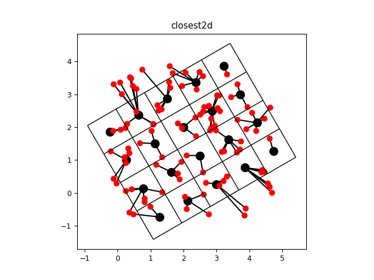

3.5.6.7. test_regrid_fortran_closest2d.py – Test the fortran function closest2d()¶

"""Test the fortran function :f:func:`closest2d`"""
from vcmq import N, P, code_file_name, P, os, rotate_grid, add_grid
from vacumm.misc.grid._interp_ import closest2d
# Input grid
grid = rotate_grid((N.arange(5), N.arange(4)), 30)
xxi = grid.getLongitude()[:].filled()
yyi = grid.getLatitude()[:].filled()
# Input random points
N.random.seed(0)
np = 100
xxo = N.random.random(np)*(xxi.max()-xxi.min()) + xxi.min()
yyo = N.random.random(np)*(yyi.max()-yyi.min()) + yyi.min()
# Closest
for xo, yo in zip(xxo, yyo):
i,j = closest2d(xxi, yyi, xo, yo, nogeo=0)
P.plot([xo, xxi[j-1, i-1]], [yo, yyi[j-1, i-1]], 'k')
add_grid(grid, color='k', markersize=10, centers=True, marker='o', alpha=1)
P.scatter(xxo, yyo, c='r', s=40, zorder=11)
P.title('closest2d')
P.axis('image')
figfile = code_file_name(ext='png')
if os.path.exists(figfile): os.remove(figfile)
P.savefig(figfile)
P.close()